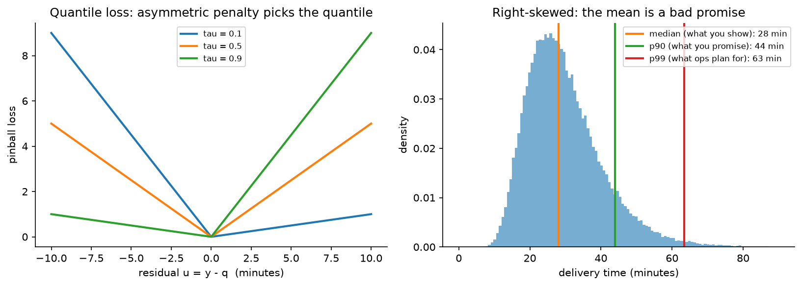

Forecasting & ETA¶
Why this matters / who asks it. Uber, Lyft, DoorDash, Instacart, Amazon, Grab and every logistics or marketplace company runs forecasting as a core system, and they ask this question in two flavours: "predict the arrival time of this specific delivery" and "forecast demand for every region and hour next week". Both are business-critical in the same way: the number is shown to a customer, used to make a promise, and consumed by an optimiser that decides where to put supply. The interviewer is checking whether you know that the mean is the wrong prediction, whether you can backtest without leaking the future, and whether you understand that your forecast changes the thing you are forecasting.
TL;DR: the whiteboard in 60 seconds¶
flowchart LR
REQ[Request<br/>origin, destination, time,<br/>order contents] --> PHYS[Physical model<br/>routing engine + live traffic<br/>→ baseline travel time]
REQ --> FEAT[Feature service<br/>real-time: traffic, store load,<br/>courier supply, weather<br/>historical: store prep-time stats,<br/>route segment history]
PHYS --> ML[ML residual model<br/>predicts correction to the<br/>physical estimate]
FEAT --> ML
ML --> Q[Quantile heads<br/>p10 / p50 / p90 per stage]
Q --> COMP[Compose stages<br/>prep + wait + travel + handoff]
COMP --> BUF[Business policy<br/>buffer from the quantile,<br/>not from the mean]
BUF --> SHOW[ETA shown to customer]
BUF --> OPT[Assignment + pricing optimiser]
SHOW -.->|actual outcome| LOGS[(Outcome logs)]
OPT -.->|changed behaviour| LOGS
LOGS --> TRAIN[Training<br/>time-forward backtests]
TRAIN --> ML
FCT[Demand forecasting<br/>hierarchical, region x hour] --> OPT- Predict the residual on top of a physical model. A routing engine already knows the road network and live traffic; the model learns what it systematically gets wrong. Uber's DeepETA is built exactly this way.
- Predict a distribution, not a point. Delivery times are right-skewed, so the mean sits above the median and below the tail. Quantile (pinball) loss gives p10, p50 and p90 directly.
- The displayed number is a business decision. Show a quantile, not the prediction: the cost of being late is not the cost of being early, and the buffer encodes that asymmetry.
- Decompose the journey into stages (prep, wait, travel, handoff), because each has different drivers and different variance, and because the optimiser needs the stages separately.
- Backtest forward in time, always. Random splits leak tomorrow's traffic into today's training set and produce a model that looks excellent and fails on Monday.
- Features must be as-of the prediction moment. Point-in-time correctness is the most common source of a too-good backtest in forecasting.
- Hierarchical forecasts must reconcile: region forecasts should sum to the city forecast, and reconciliation methods make that true without throwing away the detail.
- Feedback loops are real. A longer displayed ETA changes whether the customer orders, and an assignment optimiser fed by your forecast changes the supply that determines the actual time.
- Latency matters more than you expect. ETA is called on every search, every map refresh and every assignment decision, which makes it one of the highest-QPS models in the company.
- Evidence: Uber DeepETA (2022), DoorDash ETA posts (2021 onward), Amazon's DeepAR (2017), Google Maps and DeepMind's graph-network work on ETAs, and the hierarchical forecasting literature.
1. Requirements & scoping¶
Functional. Two systems that share infrastructure. (a) ETA: given a specific trip or order, return the expected arrival time with uncertainty, updated as the trip progresses. (b) Demand and supply forecasting: given a region and a horizon, forecast orders, couriers, and their imbalance, at the granularity the optimiser consumes.
Non-functional, with numbers to ask for.
| Quantity | Ask the interviewer | A defensible assumption |
|---|---|---|
| QPS | "How often is ETA called per order?" | Dozens of calls per order across search, checkout, assignment and tracking, so tens of thousands of QPS |
| Latency | "Budget per ETA call?" | Under 50 ms p99, because it sits inside other services' budgets |
| Horizon | "ETA horizon and forecast horizon?" | ETA: 10 to 90 minutes. Forecast: next hour to next 2 weeks |
| Granularity | "Forecast by what unit?" | Hexagonal region times 15 minutes for operations; city times day for planning |
| Accuracy target | "What do we optimise: mean error or late rate?" | Late rate at a promised quantile, plus median absolute error |
| Freshness | "How fresh are traffic and store-load features?" | Seconds for traffic, minutes for store load |
| Coverage | "How many cities, and how different are they?" | Hundreds, with very different road networks and behaviour |
Success metrics.
- North star: on-time rate against the promise shown to the customer, together with the size of the buffer used to achieve it. Either alone is gameable: promise two hours and you are always on time.
- Guardrails: order conversion (a long ETA suppresses orders), courier utilisation, support contacts about lateness, and the optimiser's own objective (delivery cost per order).
- Offline proxies: median and mean absolute error, quantile loss at the operating quantiles, calibration of the predicted quantiles (does p90 actually contain 90% of outcomes), and error by segment: city, hour, distance band, and the tail.
Questions a staff engineer asks.
- "Is the ETA a promise or an estimate? A promise needs a quantile and a buffer policy; an estimate needs the median."
- "What consumes this number? A customer display and an assignment optimiser want different things, and the optimiser usually wants the distribution."
- "How late is 'late' in business terms? Refund thresholds and support costs define the asymmetry I optimise against."
- "Do we already have a routing engine? If so, my model predicts its residual rather than starting from coordinates."
- "Does the ETA we show change behaviour? If yes, my training labels come from a world my own model shaped, and I need that in the design."
2. Data¶
Sources. Historical trips and orders with timestamps for every stage, GPS traces, the road network and the routing engine's outputs, live traffic, store and restaurant operational data (prep times, current load, staffing), courier state (location, current assignments, shift), weather, events and holidays, and the displayed ETA itself, which is a feature of the world you created.
Labels. The outcome timestamp, which is mostly clean but has traps:
- Stage attribution: the courier marks "picked up" late, so prep time looks longer and travel time shorter. GPS geofence events are more reliable than app taps, and the design should say which is the source of truth.
- Censoring: cancelled orders have no completion time, and they are not missing at random; they cancel because they were slow. Dropping them biases the model optimistic.
- Multi-stop trips: batched deliveries where one order waits for another need careful attribution or the model learns that the second order is inherently slow.
Feedback loops, which are the subtle part. The ETA you display changes behaviour in at least three ways: a long ETA suppresses the order (so the training data under-represents conditions where you predicted badly), the ETA feeds the assignment optimiser which changes which courier is sent, and couriers adjust their behaviour to the displayed time. The consequence for design: the model is trained on data generated under its own policy, and offline improvements do not translate mechanically. Mitigate with holdout regions or randomised buffer experiments, and treat the online test as the arbiter.
Features.
| Family | Examples | Freshness |
|---|---|---|
| Physical | Routing engine estimate, distance, number of turns, road classes on the path | Seconds |
| Real-time traffic | Segment speeds, incidents | Seconds to minutes |
| Spatial | Origin and destination cells, their historical residuals, airport or campus flags | Batch, with online lookup |
| Store or merchant | Historical prep-time distribution, current open orders, staffing, menu complexity | Minutes |
| Courier and marketplace | Supply-demand ratio in the region, current assignment queue depth | Seconds |
| Temporal | Hour of week, holiday calendar, local events, weather | Batch plus live weather |
| Order | Item count, special handling, payment type | Request time |
Spatial features need care. Latitude and longitude as raw numbers are nearly useless to a tree or an MLP; geohash or hexagonal cell embeddings at several resolutions are the usual encoding, learned jointly with the task, so that "this particular apartment complex takes four extra minutes" becomes learnable.
Point-in-time correctness. Every historical feature must be the value that was known at prediction time: the store's average prep time computed over data up to that moment, the traffic as observed then, the supply ratio then. Computing a store's average prep time over the full history, including the future, is the single most common leak in this domain, and it produces a backtest that cannot be reproduced online. The mechanics are in the platform chapter.
3. Modelling¶
3.1 Baselines¶
Two, and both are worth naming. The routing engine alone (distance over expected speed, summed along the path) is the physical baseline. A historical average by (origin cell, destination cell, hour of week) is the statistical baseline. Both are cheap, and a good ML model must beat their combination, not just one of them.
3.2 Residual learning on top of a physical model¶
The routing engine encodes the road network, turn restrictions and live traffic. A neural network starting from raw coordinates would have to relearn all of that from trip data, which it will do badly. Predicting the residual between the routing estimate and the observed outcome leaves the model with the part it can learn: systematic biases by location, time, merchant, courier and order type.
where \(f_\theta\) predicts the correction. Uber's DeepETA post describes exactly this hybrid design, using machine learning to predict the residual between the routing engine's ETA and the observed outcome, which they call ETA post-processing.
Two extra benefits to mention. The physical model gives a sane answer when the ML model fails or times out, which is a real fallback. And the residual is a much better-conditioned target than the absolute time: it is roughly zero-centred, has much smaller variance, and does not require the model to learn that longer distances take longer.
3.3 Stage decomposition¶
For a delivery, the total time is the sum of stages with different drivers:
Model the stages separately and compose. The reasons: each stage has different features (prep depends on the merchant, travel on traffic), the optimiser needs the stages separately to decide when to dispatch a courier, and a stage-level error is diagnosable while a total-time error is not. The cost is that summing quantiles is not the quantile of the sum, so composing uncertainty requires either a simulation over the stage distributions or a model of their correlation. Say that out loud; it is a favourite follow-up.
3.4 Quantile regression and why the mean is wrong¶
Travel and delivery times are right-skewed: a delivery can be much later than expected, and only a little earlier. The mean of a skewed distribution is a poor promise, because it is exceeded more often than half the time in the direction that hurts.
Train with the pinball (quantile) loss. For a target quantile \(\tau\) and prediction \(q\):
which penalises under-prediction with weight \(\tau\) and over-prediction with weight \(1 - \tau\). Minimising it yields the \(\tau\)-quantile of the conditional distribution. Predict several quantiles with separate heads on a shared trunk, and enforce monotonicity (p10 below p50 below p90) either by construction (predict p50 and non-negative offsets) or by sorting at inference.

Left: the quantile loss is an asymmetric penalty whose slope ratio picks the quantile. Right (illustrative): a right-skewed delivery-time distribution where the median, the p90 and the p99 are far apart, which is why the number you display, the number you promise and the number operations plan against are three different numbers.
The buffer is policy, not modelling. Displaying p50 means being late half the time. Displaying p90 means a long, conversion-killing estimate. The displayed value comes from a policy that trades lateness cost against conversion, and it should be chosen by experiment, with the model supplying a calibrated distribution.
3.5 Model families¶
- Gradient-boosted trees on engineered features are the strong default for the residual: fast to train, robust, good with heterogeneous tabular features, and they support quantile loss directly. Weak on high-cardinality categorical features (millions of merchants, millions of cells) and on sequences.
- Neural networks with embeddings handle the high-cardinality spatial and merchant features, which is where they earn their place. Uber's DeepETA post reports that an encoder-decoder architecture with self-attention over the feature set gave them the best accuracy among the architectures they tried, under a hard latency constraint.
- Graph networks over the road network, where segments are nodes and the model propagates congestion along the graph. DeepMind and Google described using graph neural networks over route "supersegments" to improve ETA accuracy in Google Maps, reporting improvements in several cities.
- Sequence models over the trip so far, updating the ETA as the trip progresses, which turns a one-shot prediction into a filtering problem.
For the interview: GBDT residual model as the baseline that ships, a neural model with embeddings when merchant and location cardinality dominates, and graph structure when you own the road network and congestion propagation matters.
3.6 Demand forecasting and hierarchy¶
The other half of the chapter. Forecast orders and courier supply per region per time bucket, for horizons from an hour (dispatch) to weeks (recruitment).
Global models over many series. Fitting a separate ARIMA per region wastes the structure shared across regions. A single model trained across all series, with the series identity as an embedding, learns shared seasonality and transfers to sparse series. DeepAR (Salinas, Flunkert & Gasthaus, arXiv:1704.04110) is the canonical version: an autoregressive recurrent network trained on many related time series producing probabilistic forecasts, handling widely varying scales through rescaling, with the paper reporting around 15% accuracy improvement over the state of the art at the time on several real-world datasets.
Hierarchy and reconciliation. Forecasts exist at several levels (hexagon, city, country; product, category, total) and the business needs them to be consistent. Forecasting each level independently produces incoherent numbers. Reconciliation projects the independent forecasts onto the space of coherent ones; MinT (Wickramasuriya, Athanasopoulos & Hyndman, JASA 2019) computes the reconciliation that minimises the trace of the forecast error covariance, and it dominates naive bottom-up or top-down approaches because it uses information from every level.
Seasonality, holidays and events. Multiple seasonalities (hour of day, day of week, month), holiday effects that move (Ramadan, Easter), one-off events (a stadium concert), and weather. Encode them as features instead of post-hoc adjustments, so the model can learn interactions (rain on a Friday evening is not rain plus Friday).
Marketplace effects. The forecast feeds an optimiser that changes pricing and incentives, which changes demand. A forecast of "demand" is really a forecast of demand under the policy you are about to run, which is a counterfactual problem. Practical handling: forecast the exogenous part (weather, events, seasonality) and model the policy response separately, or include the planned policy variables as features so the forecast is explicitly conditional.
3.7 Long-tail events¶
Aggregate error metrics are dominated by the common case, while customer complaints come from the tail: the order that took three times the estimate. DoorDash's engineering writing on improving ETA accuracy for long-tail events describes a combination of real-time features, historical features designed to capture sparse patterns around tail events, and a custom loss function that targets accuracy when large deviations occur. The general principle: if you want tail accuracy, put it in the loss (quantile loss at a high \(\tau\), or an asymmetric cost), because a squared error objective will always trade the tail away.
4. Training & serving¶
Training pipeline. Outcome logs joined to point-in-time features, split by time, trained with quantile losses, validated on a held-out future window, and gated on per-segment metrics before release. Retrain cadence: daily or weekly for the ETA residual model (traffic patterns and merchant behaviour drift), plus a fast path when a city's error jumps. Demand models retrain daily with a rolling window.
Backtesting properly. The protocol to describe:
- Split by time, never at random.
- Use rolling-origin evaluation: train on data up to \(t\), predict \([t, t + h]\), advance \(t\), repeat. That gives a distribution of errors across periods instead of one number from one lucky window.
- Respect the label delay: at prediction time you do not know the outcomes of trips still in flight, so the features cannot include them.
- Re-run feature computation as-of the prediction timestamp, instead of joining the current value of an aggregate.
- Evaluate on the same segments the business cares about, since a global improvement that regresses one city is a launch blocker.
Serving. ETA is called constantly, so the model is one of the highest-QPS services in the company, and Uber's DeepETA post says theirs is the highest-QPS model at Uber. That drives the architecture: a tight latency budget (a few milliseconds of model time), feature fetching that is mostly precomputed and cached, integer-quantised or small models, and heavy use of batching where the caller allows it.
| Stage | Budget |
|---|---|
| Routing engine call (often cached per origin-destination pair) | 20 ms |
| Feature fetch (real-time and precomputed) | 10 ms |
| Model inference | 5 ms |
| Composition, buffer policy, response | 5 ms |
| Headroom | 10 ms |
Fallbacks. If the ML model times out, serve the routing estimate plus a static correction. If the routing engine fails, serve a historical average by cell pair and hour. Neither is good, and both are far better than failing, because a missing ETA blocks checkout.
Cost. The model is small and the QPS is enormous, so cost is dominated by the number of calls, and hardly at all by model size. Caching at the (origin cell, destination cell, time bucket) level for the search-time estimates, where precision matters less, cuts most of it; the checkout and assignment calls get the full path.
5. Evaluation & experimentation¶
Offline.
- Median and mean absolute error, and quantile loss at the operating quantiles.
- Calibration of the quantiles: does the p90 prediction actually contain 90% of outcomes, per segment. A miscalibrated p90 makes the buffer policy meaningless.
- Error by segment: city, hour of week, distance band, merchant type, and by prediction magnitude (long trips fail differently).
- Tail metrics: the rate of outcomes exceeding the prediction by more than 10 minutes, which is the number customer support feels.
- Pitfalls: random splits (leak), joining aggregates computed over the full history (leak), dropping cancelled orders (optimistic bias), and reporting a single global MAE that hides a broken city.
Online. A/B on the on-time rate and the buffer size together, with conversion and courier utilisation as guardrails. Two complications specific to this domain:
- Interference. The assignment optimiser is shared, so a treatment that predicts differently changes which couriers are assigned and therefore the control group's outcomes. Randomise by region and time (switchback) instead of by user, which is the design covered in the experimentation chapter.
- The forecast changes the outcome. Showing a longer ETA can make the delivery genuinely later (the courier paces to the estimate) or earlier (the customer is ready). Measure the actual duration as well as the error, or you will optimise a metric you are moving by definition.
Monitoring. Prediction and residual distributions per city, quantile calibration drift, feature staleness and null rates (a stale traffic feed looks like a model regression), fallback rate, and the gap between predicted and actual on-time rate. Retrain triggers: a city's calibration drifting past a threshold, a road-network or routing-engine update, a new market launch, or a seasonal regime change.
6. Trade-offs & alternatives¶
| Decision | Chosen | Alternative | When you'd flip |
|---|---|---|---|
| Target | Residual on a physical model | End-to-end time from raw inputs | No routing engine available, or the physical model is unavailable in a market |
| Output | Quantiles (p10, p50, p90) | Point estimate | Downstream consumer genuinely wants one number and owns its own buffer |
| Loss | Pinball at operating quantiles | Squared error | Symmetric costs and a roughly symmetric distribution, which is rare here |
| Structure | Stage decomposition | Single total-time model | Simple trips with one stage, or when stage timestamps are unreliable |
| Model | GBDT residual, neural for high-cardinality features | Deep model everywhere | Merchant and location cardinality is low; GBDT is cheaper to train and serve |
| Road network | Features from the routing engine | Graph neural network over segments | You own the network and congestion propagation is the dominant error source |
| Demand forecasting | One global model across series | Per-series classical models | Few series with long clean histories and strong individual structure |
| Hierarchy | Reconciled forecasts (MinT-style) | Bottom-up summation | Very few levels, or when only one level is consumed |
| Displayed value | Policy-chosen quantile plus buffer | The model's point prediction | Never; the display is a business decision with an asymmetric cost |
| Experiment unit | Region-time switchback | User-level A/B | No shared optimiser and no spillover, which is uncommon in a marketplace |
Failure modes.
- A stale traffic feed: predictions drift optimistic across a whole city at once. Detect on feature freshness, not on model error, because model error takes hours to accumulate.
- A new merchant with no history: prep-time features are missing and the model falls back to a category prior that is wrong. Monitor new-entity volume and their error.
- Road network change or a routing engine update: the residual model was trained against the old physical model, so its corrections are now wrong. Version the physical model as an input to the ML model and retrain when it changes.
- Seasonal regime shift: a model trained on summer data is wrong in December. Rolling-origin backtests across seasons reveal it; a single holdout window will not.
- Buffer creep: each team adds a safety margin, and the customer sees an estimate 20 minutes too long. Audit the end-to-end buffer as one number owned by one team.
7. How real companies did it: as mock interviews¶
7.1 Uber, "the highest-QPS model in the company"¶
Interviewer prompt. "We already have a routing engine that uses map data and live traffic, and its ETAs are systematically wrong in ways riders notice. Fix the accuracy without breaking a latency budget that sits inside every other service."
Candidate walkthrough. Clarify: the routing engine stays, so the ML problem is the correction; latency is severe because ETA is called everywhere; the model must serve globally across very different cities. Metrics: error against observed arrival, by segment. Data: origin, destination, request time, real-time traffic, and the nature of the request, such as whether it is a rideshare pickup or a delivery dropoff. Model: predict the residual between the routing engine's estimate and the observed outcome, with an architecture chosen under the latency constraint. Serve: a very high QPS prediction service with a hard latency ceiling and a fallback to the routing estimate. Evaluate: offline error by segment, then online.
What the source says. Uber's engineering post "DeepETA: How Uber Predicts Arrival Times Using Deep Learning" (February 2022) describes a routing engine that predicts ETA as a sum of segment traversal times along the best path, an ML model that predicts the residual between that estimate and the observed outcome (which they call ETA post processing), features including origin, destination, request time, real-time traffic and request type, an encoder-decoder architecture with self-attention selected for accuracy under their latency constraints, and the statement that this is the highest-QPS model at Uber.
How to say it in the interview: learn the residual, keep the physics
"I'd keep the routing engine and train the model to predict its residual, instead of learning arrival time end to end from coordinates. Uber published this design as DeepETA in 2022: the routing engine sums segment traversal times along the best path using map data and live traffic, and the ML model predicts the difference between that and what actually happened. The alternative, an end-to-end model from raw inputs, would have to rediscover the road network and turn restrictions from trip data, which it does badly and expensively. The residual target is also much better conditioned, roughly zero-centred with small variance, so a smaller model hits the accuracy bar. Uber describe this as their highest-QPS model, so a smaller model is worth real money. The extra benefit I'd point out is the fallback: if the ML service times out, the routing estimate is still a serviceable answer, which a pure end-to-end model does not give me."
7.2 DoorDash, "the complaints come from the tail"¶
Interviewer prompt. "Our average ETA error looks fine and our customers are unhappy. The complaints are about the deliveries that run far over. What do you change?"
Candidate walkthrough. Clarify: the metric being optimised (mean error) is not the metric being felt (large deviations); the delivery has multiple stages with different variance. Metrics: rate of large over-runs, plus quantile calibration. Data: real-time signals about store load and courier supply that predict congestion, plus historical features that capture sparse patterns for particular stores and time windows. Model: keep the structure, change the loss to penalise large deviations, and add the features that carry tail signal. Serve: same path. Evaluate: tail metrics explicitly, not just MAE.
What the source says. DoorDash's engineering post "Improving ETA Prediction Accuracy for Long-tail Events" (April 2021) describes a three-part approach: adding real-time features to the model, using historical features that help the model learn sparse patterns around tail events, and a custom loss function that optimises for accuracy when large deviations occur. Their later engineering writing describes multi-task models and probabilistic forecasts for ETAs.
How to say it in the interview: put the tail in the loss
"If the complaints are about large over-runs, I'd change the loss before I change the architecture. Squared error spends its capacity on the middle of the distribution and will happily trade away the tail, so I'd move to quantile loss at a high tau, or an explicitly asymmetric cost that matches what a late delivery costs us in refunds and support contacts. DoorDash described exactly this in their 2021 post on long-tail ETA accuracy: real-time features, historical features aimed at sparse tail patterns, and a custom loss targeting large deviations. The alternative is to keep the loss and add a bigger buffer, which fixes the on-time rate and costs conversion on every single order, including the ones that were never at risk. The trade-off with a tail-weighted loss is that median accuracy degrades slightly, so I'd report median error and tail rate side by side and let the product decide the trade, instead of hiding it in a single number."
7.3 Amazon, "thousands of series, and you need the distribution"¶
Interviewer prompt. "We forecast demand for millions of products across many warehouses. Most products have short, sparse histories. Fitting a model per series does not work. What do you build?"
Candidate walkthrough. Clarify: the consumer is an inventory optimiser that needs quantiles, not point forecasts, because safety stock is a quantile decision; scales vary by orders of magnitude across products. Metrics: quantile loss at the service levels the business uses. Data: many related series with covariates (promotions, price, seasonality). Model: one global autoregressive model trained across all series, with per-series embeddings, rescaling to handle scale variation, and a probabilistic output so the optimiser gets a distribution. Serve: batch forecasts on a schedule. Evaluate: quantile loss and calibration, backtested rolling-origin.
What the source says. Salinas, Flunkert & Gasthaus, "DeepAR: Probabilistic Forecasting with Autoregressive Recurrent Networks" (arXiv:1704.04110) describes training a single autoregressive recurrent model on a large number of related time series to produce probabilistic forecasts, handling widely varying scales through rescaling and velocity-based sampling, learning seasonality and growing uncertainty from the data, and reports accuracy improvements of around 15% over the state of the art on several real-world datasets.
How to say it in the interview: one global model, probabilistic output
"For many sparse related series I'd train one global model across all of them with a series embedding, and I'd make the output a distribution. DeepAR is the reference: one autoregressive recurrent model trained across many related series, rescaled to cope with scales that differ by orders of magnitude, producing probabilistic forecasts, with reported accuracy gains of around 15% over the prior state of the art. The alternative is a classical model per series, which is interpretable and works well when a series has a long clean history, and which starves on the thousands of products with six weeks of sparse data. The reason I insist on the probabilistic output: the consumer is an inventory optimiser choosing safety stock, and safety stock is a quantile decision, so a point forecast forces the optimiser to invent its own uncertainty model from nothing."
7.4 Google Maps, "the road network is a graph"¶
Interviewer prompt. "Our ETAs are computed from segment speeds, and they miss the way congestion propagates: a jam two kilometres ahead will affect this segment in five minutes. How would you capture that?"
Candidate walkthrough. Clarify: the structure we are failing to use is the connectivity of the road network over time. Model: represent the route as a graph of connected segments and run a graph neural network so that information propagates between adjacent segments, predicting travel time over the composed route instead of summing independent segment estimates. Data: historical and live traffic over the network. Serve: precompute over commonly travelled groupings of segments to keep query-time cost bounded. Evaluate: ETA accuracy per city, since road networks and traffic behaviour differ.
What the sources say. DeepMind and Google published a description of using graph neural networks to improve ETA predictions in Google Maps, operating over "supersegments" (sequences of adjacent road segments) so the model can account for connectivity, and reported improvements in real-time ETA accuracy across a number of cities.
How to say it in the interview: graph structure when you own the network
"If congestion propagation is the dominant error source, I'd model the route as a graph instead of a sum of independent segments. DeepMind and Google described doing this for Google Maps, using graph neural networks over supersegments, sequences of adjacent road segments, and reported improved real-time ETA accuracy across a number of cities. The alternative, my segment-sum baseline with traffic features, is far cheaper and cannot express 'this segment will be slow in five minutes because of what is happening downstream'. The trade-off is serving cost and complexity: a graph model over a live network is expensive at query time, which is why they precompute over supersegments instead of running the graph per request. I'd only take this on if I owned the road network data, and I'd check first whether my residual model with downstream-traffic features already captures most of it, because it often does at a fraction of the cost."
7.5 The marketplace, "your forecast changes the future"¶
Interviewer prompt. "Our demand forecast feeds surge pricing and courier incentives. When we forecast high demand, we raise pricing, and demand falls. Our forecast is then wrong, and we retrain on that. What is going on and how do you fix it?"
Candidate walkthrough. Clarify: the forecast is an input to a policy that changes the outcome, so "demand" is not exogenous. Metrics: forecast error conditional on the policy, plus the optimiser's own objective. Model: separate the exogenous drivers (weather, events, seasonality, trend) from the policy response, and make the forecast explicitly conditional on the planned policy variables, so it answers "demand if we price like this". Data: policy variables logged as features; randomised or switchback experiments to identify the response. Evaluate: backtest conditionally, and use switchback experiments to estimate the policy response rather than reading it off observational data.
What the sources say. The switchback experimental design used to handle exactly this kind of interference in marketplaces is described in DoorDash's engineering writing on switchback testing and in the causal-inference literature on experiments under interference; the design details are covered in the experimentation chapter.
How to say it in the interview: forecast conditionally, identify the response experimentally
"The forecast has become a self-fulfilling input, so I'd stop forecasting 'demand' and start forecasting 'demand given the policy we are about to run'. Concretely: the model takes the planned pricing and incentive variables as features, so its output is explicitly conditional, and the exogenous part (weather, events, seasonality) is modelled separately. The part that cannot come from observational data is the policy response itself, because historically we only priced high when we predicted high demand, so price and demand are confounded. That has to come from randomisation, and in a marketplace the unit has to be region-time instead of user, because supply is shared. DoorDash has written about switchback experiments for this reason. The trade-off is that switchbacks are noisy and need long run times, so I'd use them to estimate the response curve occasionally instead of continuously."
8. Staff-level follow-ups¶
Your offline MAE improved by 8% and the on-time rate did not move. Why?
Several possibilities, and I'd check them in order. First, the displayed ETA is a quantile plus a buffer, so improving the median does nothing to the on-time rate unless the buffer policy is re-tuned against the new distribution; the fix is to re-optimise the buffer jointly with the model. Second, the improvement may be concentrated where it does not matter, for example short trips that were already on time, so I'd decompose the gain by distance band and by whether the order was at risk. Third, leakage: an 8% offline gain that vanishes online is the classic signature of a feature computed with information not available at prediction time. Fourth, the feedback loop: a better ETA changes assignment decisions, which changes the actual durations, so the outcome distribution moved under me.
Why not just predict the mean and add a constant buffer?
Because the right buffer is not constant. The spread of the outcome distribution varies enormously by context: a short trip on a quiet Tuesday has a few minutes of spread, a long trip through a city centre on Friday evening with a busy merchant has thirty. A constant buffer is simultaneously too small in the high-variance case, which is where the complaints come from, and too large in the low-variance case, which costs conversion on every one of those orders. Predicting quantiles gives me a context-dependent spread, so the buffer adapts. The extra cost is calibration work: a p90 that is not really a p90 is worse than a constant buffer, because it gives false confidence to the policy layer.
How do you compose stage-level uncertainty into a total?
Not by adding quantiles, because the p90 of a sum is not the sum of the p90s unless the stages are perfectly correlated. Three options. Simulate: sample from each stage's predicted distribution and take quantiles of the sum, which handles arbitrary shapes and needs a correlation model. Model the total directly with its own quantile heads, using the stage predictions as features, which sidesteps the composition problem and loses the stage-level interpretability the optimiser wants. Or assume a parametric family per stage (log-normal is a decent fit for travel times) and compose analytically with an estimated correlation. In practice I'd predict stages for the optimiser and a separate total-time model for the displayed number, and reconcile the two so they do not contradict each other visibly.
Walk me through a backtest that will not lie to me.
Time-ordered splits with rolling origins: train on everything up to \(t\), evaluate on \([t, t+h]\), roll forward, and report the distribution of errors over many origins rather than one number. Every feature recomputed as-of the prediction timestamp, which in practice means the feature store has to support point-in-time joins rather than the training job joining current aggregate tables. Trips still in flight at \(t\) contribute no label and no features derived from their outcome. Cancelled orders handled explicitly rather than dropped, since they cancel for reasons correlated with lateness. And evaluation across at least a full seasonal cycle, or you will discover in December that the model only knows summer. The test I'd run to catch a leak: shuffle the timestamps and confirm performance collapses; if it does not, something in the pipeline is reading the future.
A city launches next month with no historical data. What do you do?
Start with the physical model, which needs only map data, plus a residual model trained on similar cities with the city identity held out, so the model must generalise from city-level attributes (density, road type mix, average speeds) rather than memorise. Add a conservative buffer initially, and shrink it as data accumulates, with the shrink schedule tied to measured calibration rather than to the calendar. Instrument heavily from day one: the first weeks of a new market are when the residual distribution is most informative, and transfer from the wrong donor city is the failure I'd watch for, so I'd compare the new city's residual distribution to the donors weekly.
5x demand spike from a storm. What happens to your system?
Two distinct problems. The forecast is wrong because storms are rare in the training data, which argues for weather as an explicit feature and for a fallback that widens the predicted distribution when the feature values are outside the training range, rather than confidently predicting the usual. The ETA model degrades because supply-demand ratios go outside anything it has seen, and the model extrapolates badly; monotonic constraints on the supply features help here, since more demand per courier must not decrease the predicted time. The serving system itself is fine, since it is a small model at high QPS. The operational answer is to widen buffers automatically when features are out-of-distribution, which is a detectable condition, and to say so in the product rather than silently promising times we cannot hit.
Which should feed the optimiser: the point estimate or the distribution?
The distribution, when the optimiser can use it. Assignment decisions are fundamentally about risk: sending a courier who will probably be quick but might be very slow is different from sending one who is reliably medium, and only the distribution can express that. Practically the optimiser usually wants a few quantiles rather than a full distribution, so I'd expose p10, p50 and p90 per stage. The cost is that the optimiser's problem gets harder and slower, so I'd negotiate: give it the distribution for the decisions where risk matters (assignment, batching) and the median for the ones where it does not (display ordering).
What breaks first at 10x volume?
The feature service, because ETA is called dozens of times per order and each call fans out to real-time features. The fixes are caching at coarse granularity for the low-stakes calls (search-time estimates), and pushing precomputed features close to the model. Second is the training data volume, which forces sampling strategies that preserve the tail, since uniform down-sampling throws away exactly the rare events the tail-weighted loss needs. The model itself scales fine; it is small by design because of the latency budget.
Give me the metric you would show the operations leadership.
On-time rate against the promise, plotted with the average buffer on the same chart, segmented by city. Either alone is easy to move in a way that helps nobody: on-time rate goes to 100% by promising two hours, and the buffer goes to zero by being late constantly. The pair shows whether the forecast is genuinely getting sharper. Underneath it I'd keep quantile calibration per city as the health metric, because when calibration drifts, both headline numbers stop meaning what people think they mean.
9. Scaling & evolution¶
- One city. The routing engine plus a historical-average correction by cell pair and hour. Log everything with stage timestamps, because that logging is what makes the next version possible.
- Several cities. A GBDT residual model with point-in-time features, quantile heads, a buffer policy chosen by experiment, and rolling-origin backtests. Demand forecasting with one global model across regions.
- Global. Neural residual models with high-cardinality spatial and merchant embeddings, stage decomposition feeding an optimiser, tail-weighted losses, per-city calibration monitoring, switchback experimentation, and hierarchical reconciled demand forecasts.
- Batch to real-time. ETAs updated continuously during the trip using the observed progress so far, which turns the model into a filter; demand forecasts refreshed every few minutes for dispatch rather than hourly for planning.
- Single model to jointly optimised. The end state couples forecasting, pricing and assignment: the forecast is conditional on the policy, the policy is chosen against the forecast distribution, and the whole loop is evaluated with switchbacks. That coupling is where the remaining value is, and it is also where the evaluation difficulty moves from modelling to causal inference.
References¶
- Uber Engineering. "DeepETA: How Uber Predicts Arrival Times Using Deep Learning." February 2022 (uber.com).
- DoorDash Engineering. "Improving ETA Prediction Accuracy for Long-tail Events." April 2021 (doordash.engineering); "Improving ETAs with multi-task models, deep learning, and probabilistic forecasts" (careersatdoordash.com); "Switchback Tests and Randomized Experimentation Under Network Effects at DoorDash" (careersatdoordash.com).
- Salinas, D., Flunkert, V., Gasthaus, J. "DeepAR: Probabilistic Forecasting with Autoregressive Recurrent Networks." 2017 (arXiv:1704.04110); published in the International Journal of Forecasting, 2020.
- DeepMind and Google. "Traffic prediction with advanced Graph Neural Networks" (graph neural networks over supersegments for Google Maps ETAs), 2020 (deepmind.google).
- Wickramasuriya, S. L., Athanasopoulos, G., Hyndman, R. J. "Optimal Forecast Reconciliation for Hierarchical and Grouped Time Series Through Trace Minimization." JASA 2019.
- Hyndman, R. J., Athanasopoulos, G. "Forecasting: Principles and Practice," 3rd edition. Online textbook covering hierarchical forecasting, backtesting and evaluation (otexts.com/fpp3).
- Koenker, R., Bassett, G. "Regression Quantiles." Econometrica 1978.
- Book cross-references: notifications, uplift & experimentation (switchbacks), ML platform & point-in-time features, uncertainty & reliability.